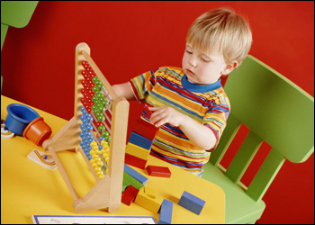

|  |
Scoring in the Low-Key Hillclimbs is simple!
For each event, a rider receives a score equal to 100 times the ratio of the median time for his/her gender and his/her time up the hill. For example, if there's 41 riders, and the 21st rider gets a time of 40 minutes, and your time is 50 minutes, you get a score of 100 * (40/50) = 80 points.
At the end of the series, your overall score is calculated as the sum of your five best scores (during the series, or if climbs are canceled, it's half the climbs completed, rounded up) from the nine weeks: you get four throw-aways. These throwaways become available at weeks two, four, six, and eight, so after three weeks, for example, it's top two scores.
Those who've volunteered at least one week where volunteering caused them to not be able to climb, or who received volunteer credit for some non-Low-Key event (like a memorial ride), get to drop an extra score (assuming there's still at least one counting score, of course), and pro-rate their total score. For example, instead of 5 counting scores, they can count 4, then multiply their total by 5/4. This basically counts their average counting score for that extra dropped score. Volunteer three times or more, and you can drop up to two scores (this is new for 2008).
And of course, to get a score, unless you're a volunteer, you need to wear your helmet. Sorry, kids!
Team scores are calculated using the top three riders in each team for a given week. Overall team score is calculated using the same number of weeks as individual overall scores.
One complication: any team volunteers (who didn't ride) in a given week score, for the purposes of overall team score only, their median score in all weeks in which they participate as a rider. This rule, "The Heller Rule", prevents teams from being penalized for having riders volunteer. Last year, average score was used, instead of median for this purpose. The change is due to the Chaiken Amendment to the Heller Rule, implemented after week 4 of the series this year. Note, unlike the individual scores, this potential bonus to team score is awarded every time a rider volunteers. So if I volunteer rides week 1, then volunteers weeks 2 through 9, the team score may benefit on every one of those weeks. The volunteer contribution to team score is included, though, only on the overall score page, not the individual climb results pages. The scoring on the individual result page represents the team which did the best on that particular climb, while the scores listed on the overall page are intended only for the calculation of the best overall team.
The best teams almost always get a balanced contribution from the women's category, as women's scores tend to be a bit more spread out. Recruit!
There will be a special category for "most improved" rider. This is determined using the slope of a regression of the natural log of the score, versus the week number, for riders with at least four scores at the end of the series, or a pro-rated number of, weeks during the series, with a reduction in the required number of weeks for volunteers. It's a funny ranking, as bad luck in one week can have a profound affect on the result, so don't take it too seriously. But it's fun to see how we improve (or not) relative to other riders over the course of the fall.
The most improved from last year is calculated by comparing the difference of your median non-tandem score from this year to your median non-tandem score from last year. So bad luck on one or two rides won't affect your result here, much.
There will be a special ranking for riders who have accumulated the most total climbing time during the series, acknowledging their superior demonstration of endurance
The 100% club consists of riders who've climbed, or gotten volunteer credit for, every climb in the series. Either activity helps make the series a success. Thanks!!!
We occasionally give out prizes to randomly placed riders. To do this, the linked code generates such a list of candidate placings, in this specific example, three placings. In this example, the top 3 places among the number of riders present are used. For example, if the top placings were 199, 5, 8, 104, 64, and if there were 100 riders, places 5, 8, and 64 would win prizes.